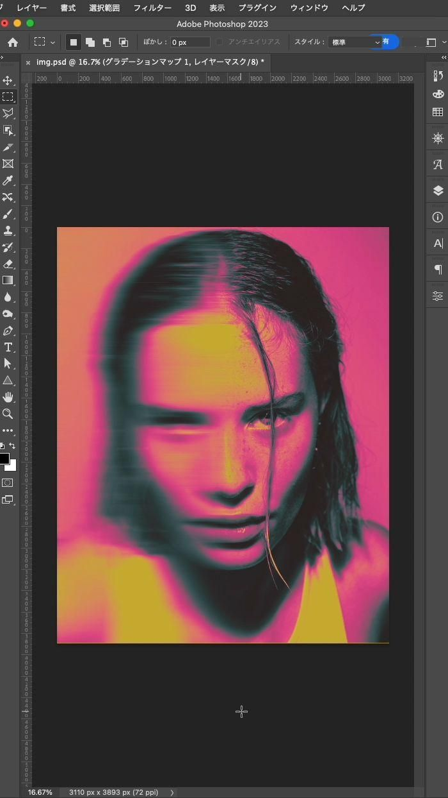

Creación directa en programas de gráficos

La creación directa en programas de gráficos consiste en elaborar imágenes digitales desde cero utilizando herramientas de dibujo o diseño asistido por computadora. Este proceso no requiere una fuente externa como una cámara o escáner, ya que el usuario crea y manipula los elementos visuales directamente en el entorno digital.
Los programas de gráficos vectoriales como Adobe Illustrator, CorelDRAW o Inkscape se utilizan para crear imágenes formadas por líneas, curvas y formas geométricas, que pueden escalarse sin perder calidad. Por otro lado, los programas de gráficos rasterizados, como Adobe Photoshop, GIMP o Krita, permiten crear imágenes basadas en píxeles, ideales para ilustraciones, pintura digital o retoque fotográfico.
Esta forma de creación digital es fundamental en el ámbito del diseño gráfico, la animación, la ilustración, la publicidad y los videojuegos, ya que permite concebir composiciones completamente nuevas, sin depender de material visual previo. Además, facilita la experimentación artística, la simulación de texturas, la integración de tipografía y el uso de capas para modificar la imagen de manera no destructiva.
De acuerdo con el sitio DesarrolloWeb, los programas de gráficos son herramientas indispensables para los diseñadores, pues intervienen en la mayoría de las fases del proceso creativo: desde la creación directa de un gráfico nuevo hasta la exportación de la imagen en el formato digital más apropiado. La capacidad de estos programas para combinar recursos vectoriales y bitmap los convierte en el medio principal de producción visual digital.
En conclusión, la creación directa en programas de gráficos representa una de las formas más versátiles y creativas de generar imágenes digitales. A diferencia de métodos como el escaneo o la fotografía, este procedimiento otorga al diseñador un control total sobre los elementos visuales, permitiendo experimentar con formas, colores, texturas y estilos sin limitaciones físicas. Gracias al desarrollo de herramientas digitales avanzadas, la producción gráfica se ha vuelto más accesible, precisa y dinámica, convirtiéndose en un pilar esencial del diseño contemporáneo, la comunicación visual y las industrias creativas en general.
Softwares:
| Adobe Photoshop: |
 |
| Adobe Illustrator: |
 |
| GIMP: |
 |
Fuente consultada:
DesarrolloWeb. (2005, 5 de abril). Programas de diseño gráfico. DesarrolloWeb.com. https://desarrolloweb.com/articulos/1923.php